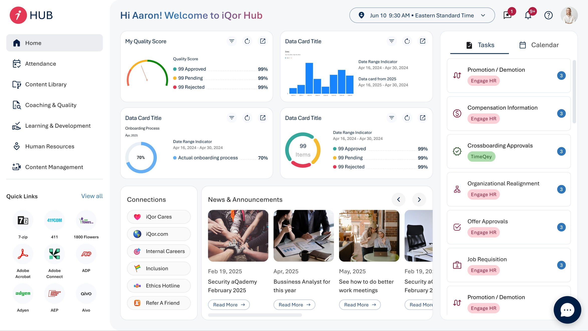
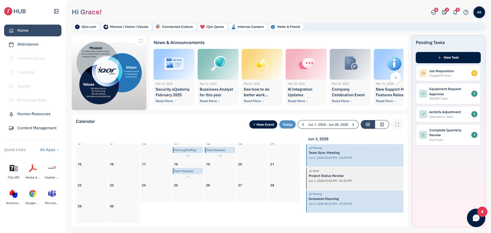
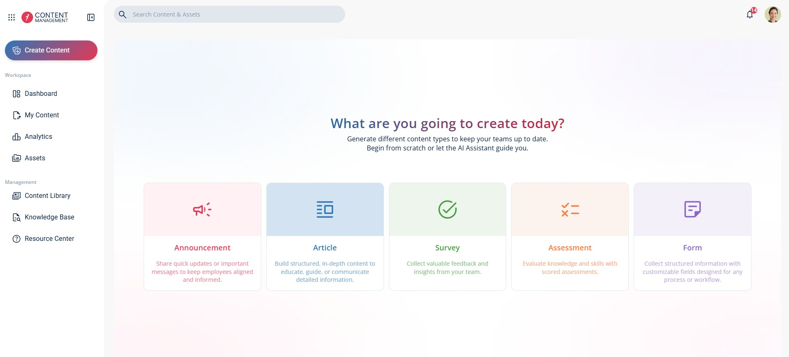

iQor HUB V1
Intranet
UX Design
BPO · Enterprise
I've been working at iQor since March 5, 2025 as a Senior UX/UI Designer. I've designed key products for the company, such as the HUB (the company's intranet and main product) from its V1 to its V2, and I'm currently designing the CMS (Content Studio Management), also from V1 to V2. I also work on improving the design team's processes through Design Ops, Design / Dev Hand Off, Harness and AI tools, keeping a modern methodology so we can build products in an agile way without leaving research and documentation behind. I also mentor and guide design interns and in-house designers to improve their workflows, build better digital products, run more effective meetings, and more.


